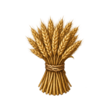
EverydayWheat
Every household grinds it for bread. Margins are thin, but the demand never stops.
Buy wheat at harvest. Supply workshops with tin, timber, and wool. Move goods by road, river, and sea as markets shift around you. Build a trading house your descendants can inherit.
The road to Marok

“If a man does not know which harbour he seeks, no wind is the right wind.”Seneca, Letters LXXI
Amphora simulates an economy from the ground up. Crops, herds, forests, quarries, and mines supply raw materials. Workshops turn those inputs into goods. Carriers move them between towns, where stocks and prices change with every harvest, shortage, and new business.
If you like EVE Online's trade routes, Dwarf Fortress's generated worlds, or the long arcs of Paradox grand strategy, Amphora connects local markets to distant shores. Start with nearby grain and workshop goods, then build routes to foreign markets for tin, amber, glass, pepper, and incense. Prices respond to harvests, wages, freight, tolls, and shortages. Generated people and families inherit the consequences across generations.

Grain and salt keep a town fed. Tin, purple and fine glass are scarce enough to build a house on. Each good has its makers, its inputs, and its own price in every market.

EverydayEvery household grinds it for bread. Margins are thin, but the demand never stops.
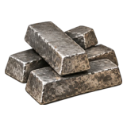
RareBronze needs one part tin to nine of copper, and tin is found in few places. Smiths wait for it.
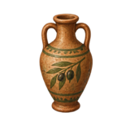
EverydayFood, lamp fuel and bath oil in one jar. Ships carry it by the hundred amphorae.
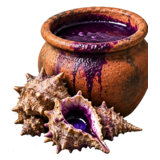
RareThousands of sea snails give a little dye. The costliest colour of the age, worn by the powerful.
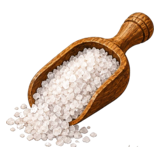
EverydayFish, meat and cheese keep only with salt. Inland towns far from the pans pay well for it.
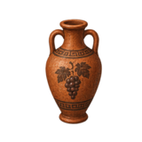
EverydayEvery table and every festival wants it. A town that holds its quality can earn a name.
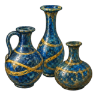
RareCore-formed by a few skilled workshops. Rich buyers fill them with perfume and fine oil.
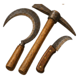
EverydayEvery farm and workshop wears out its sickles and hoes. Iron towns sell to everyone.
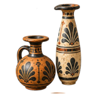
RareFor the bath, the feast and the funeral. A small crate is worth more than a cart of grain.
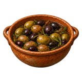
EverydayA year in brine, so they travel where fresh fruit cannot. Cheap, steady, always on the table.
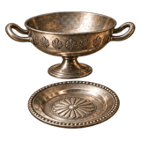
RareCups and plate for the feast. Rich families buy it to show what they are worth.
Worn for rank and kept as wealth. When a house prospers, this is where the silver goes.
Barley, cheese, timber, hides, copper, bronze, papyrus, marble, silk, horses and every craft in between.
Twelve of the goods in the first playable world. Prices move with harvests, makers, freight, and news.
A workshop buys its inputs in the local market and sells what it makes. Each one starts small and grows, from a household kiln to an export works.
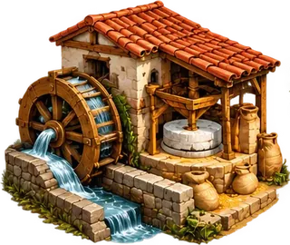
FoodEvery loaf starts here. Mills need farmland and running water or an ox to turn the stones.
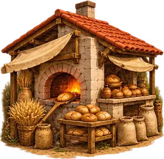
FoodFlour and firewood become the daily loaf. Towns need about one oven for every hundred people.
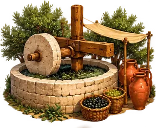
FoodFive baskets of olives give one of oil, and the oil needs jars before it can travel.
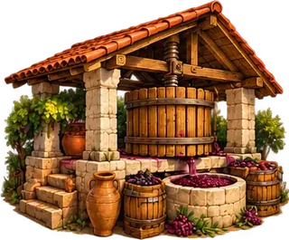
FoodMust ferments in jars into wine. A town that keeps its quality earns a name for it.
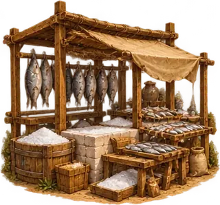
FoodFresh fish rots in a day. Packed in salt, it keeps for months and can ship inland.
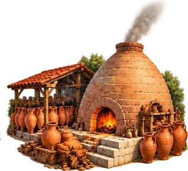
PotteryOne load of clay and firewood makes 55 jars. Oil, wine and fish all ship in what this kiln makes.
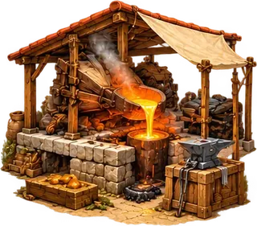
MetalNine parts copper to one of tin. A foundry far from tin waits on the ships that bring it.
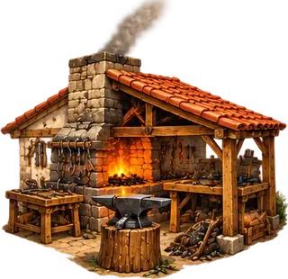
MetalIron bloom is hammered into bars, then into tool heads that every farm wears out.
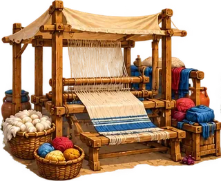
ClothSpun wool becomes cloth on the loom. Towns keep about one loom for every two hundred people.
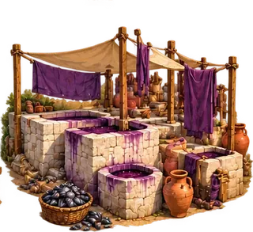
LuxuryShells boiled with salt give a little dye. Dyed wool becomes the costliest cloth in the game.
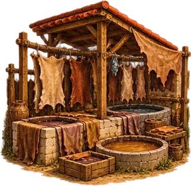
ClothHides from the butchers soak in pits of bark for months. Tanners need pasture and slaughter nearby.
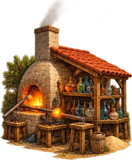
LuxuryA few skilled furnaces turn a bed of sand into flasks and beads for rich buyers far away.
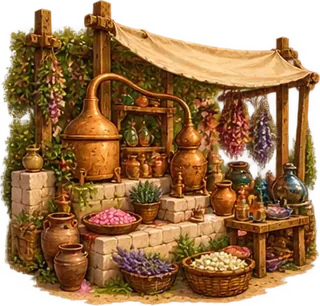
LuxuryOil steeped with aromatics. Light, small and costly, so it pays for the longest routes.
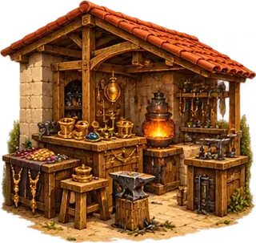
LuxuryGold, silver and cut stones made into jewellery and plate. A few big towns keep one.
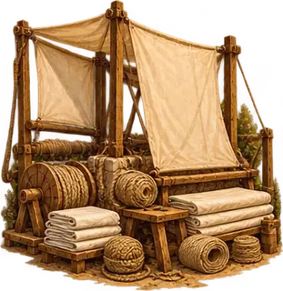
ShipsFlax twisted into rope and linen woven into sails. Harbours with flax farms nearby rig the ships.
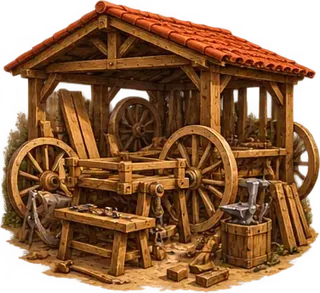
CarriersPlanks and a little iron make wheels, handcarts, carts and wagons for the roads inland.
Shipyards, breweries, quarries, mines, salt pans, papyrus makers, sculptors and every trade in between.
Sixteen of the workshops in the game. Each runs on real inputs bought in its own market.
Buy them, hire them, or have them built. A donkey walks any track. A merchant ship carries more than a thousand donkey loads, but only between harbours.
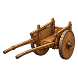
LandWhere most houses start. One person, a few crates, the nearest market.
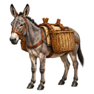
LandWalks any track the roads never reach. The carrier of the poor.
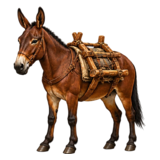
LandFive mules to one driver. The fastest way over mountain tracks.
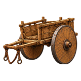
RoadSlow and strong, and the oxen eat hay. It needs a road to run on.
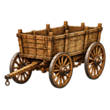
RoadA team of four for stone, timber and heavy loads on good roads.
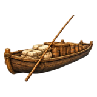
RiverBulk goods move cheaply downstream. Towing back up costs far more.
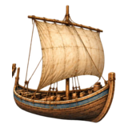
SeaHugs the shore from harbour to harbour, trading along the way.
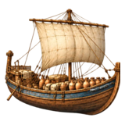
SeaHundreds of amphorae between the great ports. The mark of a real trading house.
Porters, donkey carts, pack mules and pack horses. Camel caravans for the desert roads are on the way, with breeds of animal and kinds of hull.
Loads and speeds from the game data, sourced from ancient records such as Diocletian's Price Edict where they exist.
Nothing waits for you. Harvests fail, rivals copy your routes, news runs ahead of your cargo, and floods and raids redraw the map. Towns grow where trade pays and shrink where it stops.

Turn local materials and skilled work into goods worth carrying.

Move valuable cargo between towns by road, river, and sea.
Rain follows the land, and every season sets the harvest. When the hill wheat fails, bread climbs and the river towns sell their surplus dear.
Rival houses and carriers watch the same prices you do. Open a gap and others follow, until a glut drives the price down and the weakest sellers close.
Prices and rumours travel with traders and travellers. A far market you heard of last season may have moved on. Reputation spreads the same way.
Floods, fires, earthquakes, epidemics and raids strike real places. Harbours silt up, and traffic wears new tracks into roads.
Generated people give each market a name, family line, calendar, currency, and set of customs. These come from the three peoples you can play in the first world: a sea people, a hill people, and a river people.
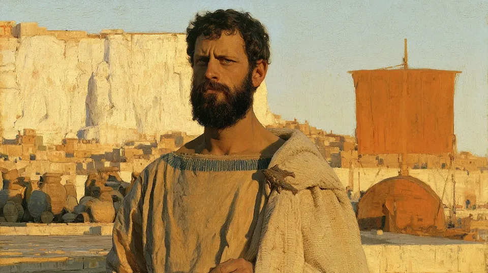
Nizkiaz, three days in the month of Nizkiri, for Kizmi, god of the sea, the harvest and healing.
Sea traders with an open port. Konozkak sells marble from the face behind the city.
Fond of fish sauce, fresh fish and salted fish. They live on grapes and legumes.
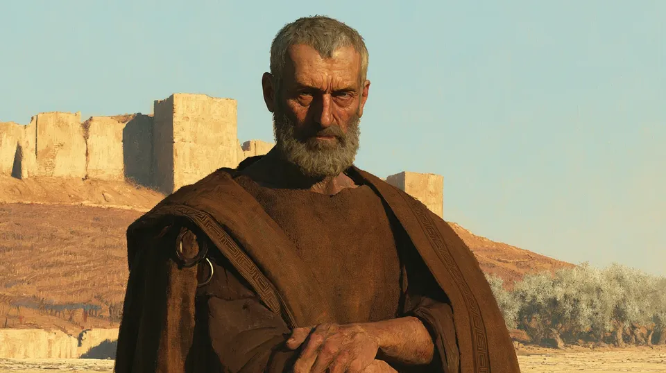
They count the years from the founding of Bostostos.
Dry hill farmers with walled towns. Foreign traders pay tolls and buy licences.
Fond of bread, olive oil and wine. Zobitos sells iron from the ore below its walls.
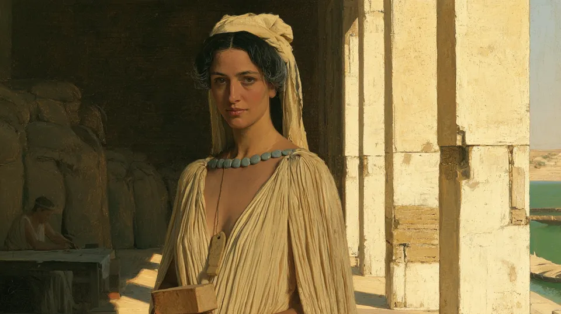
The Alonu pay in grain, not coin. She measures every sack that enters the temple: 24 measures to the sack.
The Bilbralra, held every five years. The Alonu count their years by it.
A river-valley temple people with big towns and dense farmland. Miakh sells copper and dressed stone.
People of the first playable world. Names, festivals, money, and customs are generated, and change with every world.
Grow from local cargo into workshops, carriers, and a house with business in many towns.
Grain, tools, oil, wool, and wine move with harvests, local demand, and the cost of the road.
Begin with a few crates and a donkey. Buy into workshops, then own the mines and kilns that make the goods.
Your heir takes over the ships, the workshops, the debts and the rivals. Local custom decides whether the house passes whole or splits among the children.
One email when there's news. No dispatches from the agora.